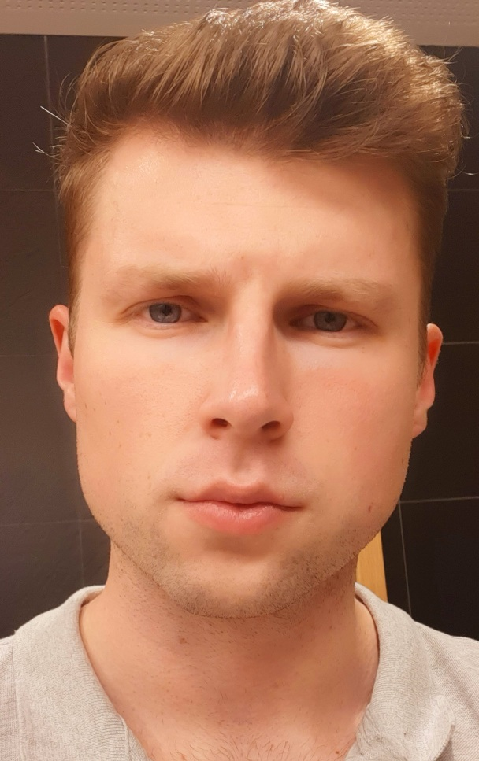

Doriano Benyocki

Übersicht
Ich bin ein motivierter und total wissbegieriger junger Mann, der Teil der Zukunft der Web- , Full Stack Entwickler sein will.
Berufs- und Arbeitserfahrung
- Während meine universitären Ausbildung habe ich viele verschiedene medizinische Abteilungen und Einrichtungen besucht (2015-2019)
- Universität Szeged, Szent-Györgyi Albert Clinical Centre, Szeged
- Städtisches Krankenhaus für Brustkrankheiten des Komitats Csongrád, Deszk
- National medizinisches Rehabilitationsinstitut, Budapest
- Anna Spa, Therman- und Erlebnisbäder, Szeged
- 2019-2022: Leonhard Lang Medizintechnik GmbH, EKG-Verpackungsabteilung, schwerpunkt Montage und Verpackung
- 2022 - : Leonhard Lang Medizintechnik, IT - Abteilung, IT-Support und Netzwerk-Administrator
Studien und Qualifikationen
- 2002 - 2010: István Széchenyi-Grund- und Mittelschule, Subotica, Serbien
- 2010 - 2014: Berufsfachschule für Gesundheitspflege, Subotica, Serbien (Spezialisirung in Gesundheitspflege - Pfleger)
- 2014 - 2015: Ballasi Institut, Universitätsvorbereitungskurs in Biologie und Chemie, Budapest
- 2015 - 2019: Universität Szeged, Krankenpflege und Patientenbetruung, Spezialisierung in Physiotherapie
- 2018: Kinesio - Tape Grundkurs und Kinesiotape theoretischer und praktischer Aufbaukurs, Budapest
- 2021 - 2022: CompTIA A+; IT-Support/Techniker Ausbildung, Innsbruck, Österreich
- 2022: Netzwerk-Administrator Ausbildung, WIFI, Österreich
Sprachkenntnisse
- Ungarisch als Muttersprache
- Serbisch (B2 - Komplex)
- Deutsch (B2, ÖSD - Komplex)
- Englisch
Sonstige Kenntnisse/Hobbys
- Führerschein der Klasse B
- Ersthelfer
- Microsoft - Office Kenntnisse
Sonstige